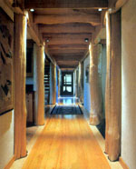

The house follows the site's natural curves, so the entrance opens to the main hallway (above), which runs along the contour line. The main living spaces are on the downhill side of the side, where the view is best.